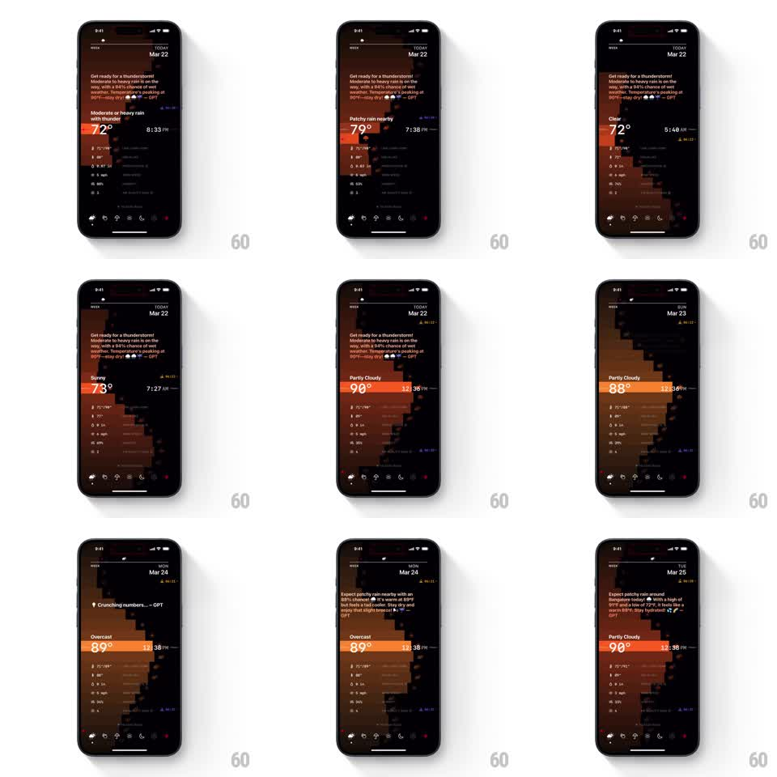

Media
Frame-by-frame

Rebuild this interaction 1:1: Lume's time scroll - scrubbing through hours and days shifts the pixel landscape's palette from night to noon, rolls the temperature, re-labels the condition, and retypes the AI summary for each day.

Rebuild this interaction 1:1: Lume's time scroll - scrubbing through hours and days shifts the pixel landscape's palette from night to noon, rolls the temperature, re-labels the condition, and retypes the AI summary for each day. ## Integration Integration: stack-agnostic spec - springs given as stiffness/damping, timed motions as duration + curve; map every value to your framework and animation library of choice. ## Scene The pixel weather dashboard scrubbing across time: "TODAY Mar 22, 72°, 8:33 PM" through "7:27 AM, 73°, Sunny", "12:36 PM, 90°, Partly Cloudy", then day changes to "SUN Mar 23, 88°", "MON Mar 24, 89°, Overcast" (with a "Crunching numbers... - GPT" pill), landing on "TUE Mar 25, 90°". The pixel mountains and sky bands shift hue (deep maroon night, amber morning, bright orange noon). ## Motion spec Pattern: scrub-driven palette shift with typed summary per day. - Scrubbing the time control: the palette tweens continuously along a day ramp (sky, mountain, and accent colors interpolate, no discrete steps); the temperature and time text update live (values tween over the drag, condition label crossfades when it changes, 200ms). - The pixel landscape redraws its bands to the new palette in a rolling shimmer (row-by-row color tween, 20ms per band) while scrubbing. - Crossing midnight: the day label rolls (old weekday slides up, new slides in, spring ~340/18), and a "Crunching numbers... - GPT" pill appears (slide + fade, 200ms) while the new day's summary composes. - Summary retypes character by character (~30ms per char, block cursor), then the pill fades out (200ms). - Release: scrub momentum settles with light deceleration to the nearest hour tick. ## Calibration - Palette is bound to the hour value, not the gesture velocity - scrubbing back and forth retraces colors exactly. - Text stays crisp over the brightest palette; add a subtle darkening scrim behind the summary when the sky is light. ## Reduced motion Time changes jump-cut with a 250ms crossfade; summary appears fully typed. ## Don't miss - The weekday rolls only on day boundaries; hours never touch it. - The pixel-art edges stay sharp through every palette tween - colors change, geometry does not.